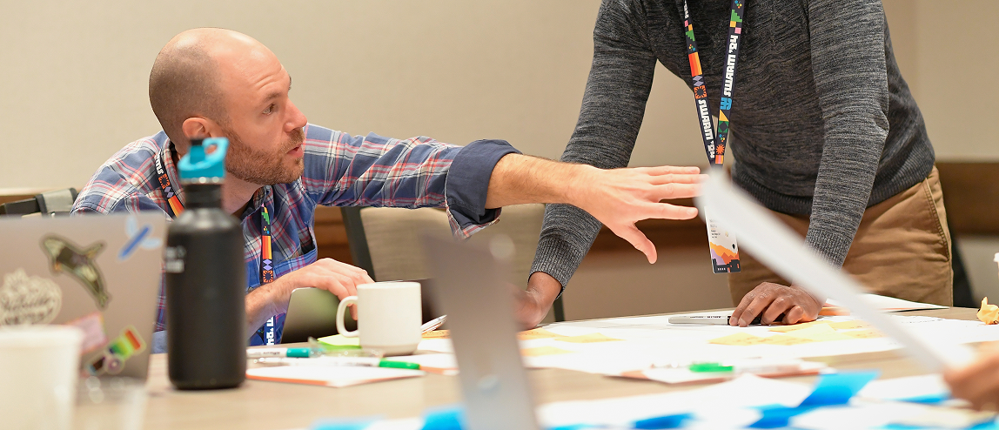
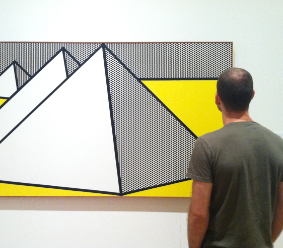
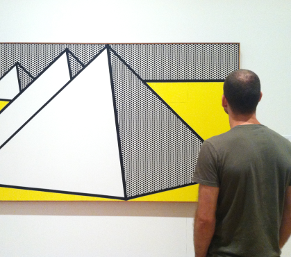

A senior product designer with a decade of complementary art direction experience.
Previously at Honeycomb, an industry-leading software startup that literally wrote the book on observability (o11y) for engineering teams. My small-but-mighty Signals Team leveraged user research to deliver a world-class alerting experience for our diverse customer base, which included enterprise teams like Apple, Slack, Vanguard, Hellofresh, and Duolingo. I worked closely with the App Enablement Team to regularly contribute components and patterns to Lattice, the platform's evolving design library.
Manifesto
"It's not about the destination, it's about the journey!” — said no software user ever. The best user experiences don't feel like journeys at all. They know their role as the vehicle that connects motivation to action, and guides users from A to B as efficiently as possible.
Optimizing flows to reach this level of efficiency isn't easy, but it's what I do. After all, nothing worth doing comes easy. With 8 years of startup SaaS experience gaining a deep understanding of users' goals, I've delivered flows that effectively transport them to their destinations. The result is a win-win for both users and businesses.



Kind words from leadership, managers, engineers, designers, researchers, and copywriters I've collaborated with throughout my career.
"I always appreciated Jeremy's deep curiosity about exactly how and why users would use the feature. This user empathy invariably led him to design elegant and impactful solutions that were beautiful to boot."
Principal Product Manager
"I really appreciate his thoughtfulness and the care he takes when designing user experiences. Where others might settle for point solutions, Jeremy connects what we're working on to the broader context and system it lives in. As a result, he builds great journeys — not just great solutions."
Staff Software Engineer
"Jeremy always has a positive and grounded outlook — something that was so important through all the ups and downs of start up life."
SVP & General Manager
"Jeremy is an exceptionally talented designer with a passion for innovation and a meticulous eye for detail. He consistently impressed me with his ability to blend creativity with strategic thinking, delivering designs that consistently improved user experience and visual appeal."
Director of Design
"Jeremy balances creative innovation with strong collaboration skills — always ready to listen, challenge assumptions, and guide the team toward better outcomes."
Senior Product Designer
"Jeremy gave fast, thoughtful feedback that kept work moving forward; his judgment on what to prioritize and what to let go of was consistently great, and something we leaned on. He's also just a genuinely easy person to work with, and the kind of teammate who makes the day-to-day feel lighter."
Senior Software Engineer
"Incredibly well-rounded and able to overcome any challenge with zen-like mastery, he is very well-versed in both design and web technologies."
Creative Director
Favorite design quotes